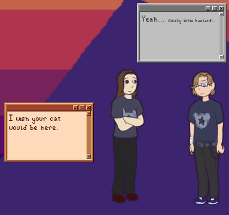

On a technicality, my first ever ghost. (I think?)
'Pasha and Misha' is a GT-based ghost from around 2019 (although they were published later). As such, it mostly follows the 'trapped in your computer' premise. Pasha and Misha are the frontmen of a band, and talk (mostly to each other) about their friends at home, and other things.
Without being *too* obvious, I hope: At some point prior to being 'kidnapped' or 'transported', something took place involving certain band members, and they talk about (mostly around) that, as well.
The ghost also features a ''creepy'' mode, admittedly also inspired by the GT template, that I personally had a lot of fun with! Kindof because I found it easier to write for than the main ghost, haha.
Content warnings
Although not excessive (I believe) in the main ghost, I feel it would be remiss of me not to include this.Implications of self-harm, suicide, and sexual assault.
Depictions of fresh self-harm wounds (in the ''creepy'' mode)
General 'unsettling' dialogue in the ''creepy'' mode